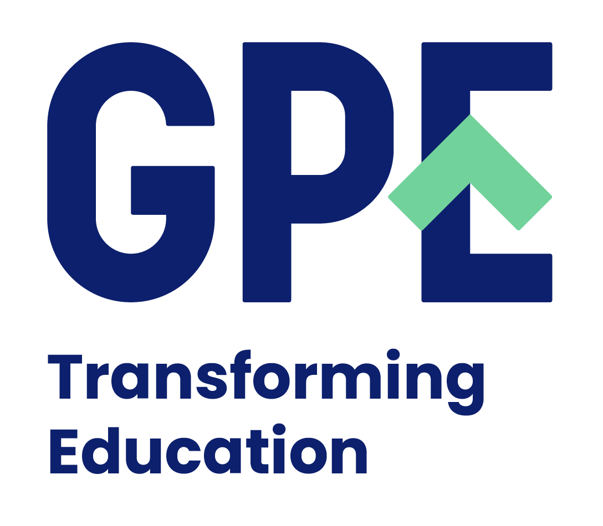

La Plataforma de Reformas Educativas reúne distintas herramientas y niveles de análisis: un modelo conceptual, casos en profundidad, ejemplos documentados, comparaciones y tendencias históricas.
Su objetivo es ayudar a comprender cómo se diseñan, implementan y evolucionan las reformas educativas en diferentes contextos. Permite analizar sus dimensiones, contrastar trayectorias e identificar patrones y condiciones relevantes. Así aporta evidencia y contexto para informar decisiones de política educativa.
VER CRITERIOS DE SELECCIÓN DE CASOS{{ p.desc }}
Proyecto desarrollado con financiamiento de:

{{ a.desc }}
El modelo analiza cómo los sistemas complejos y multinivel movilizan sus condiciones y recursos para generar oportunidades de aprendizaje y bienestar. Cada trayectoria de mejora depende de las relaciones dentro del sistema y de su contexto.
VER MODELO CONCEPTUAL